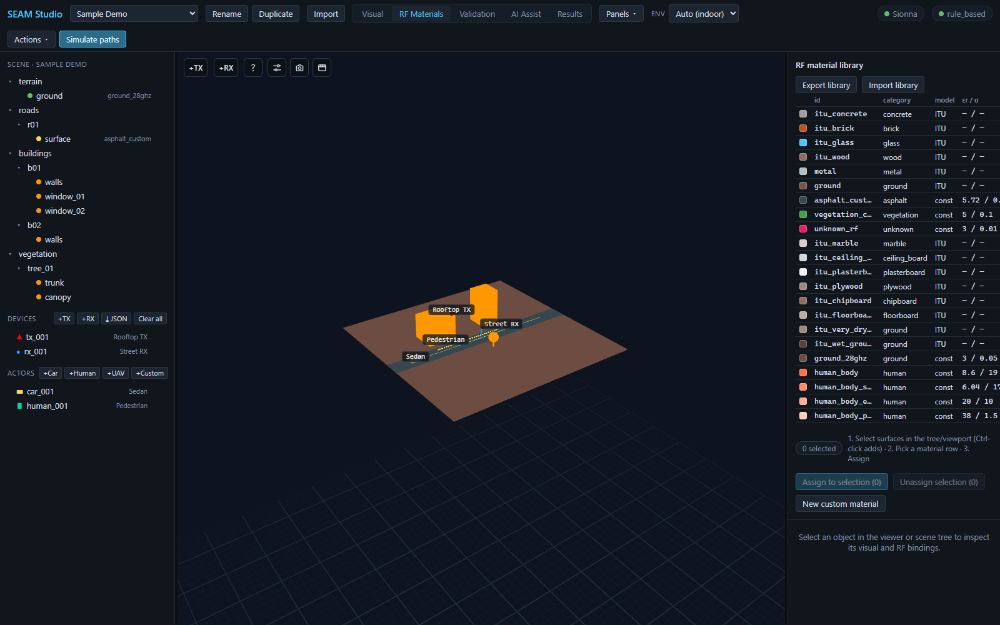
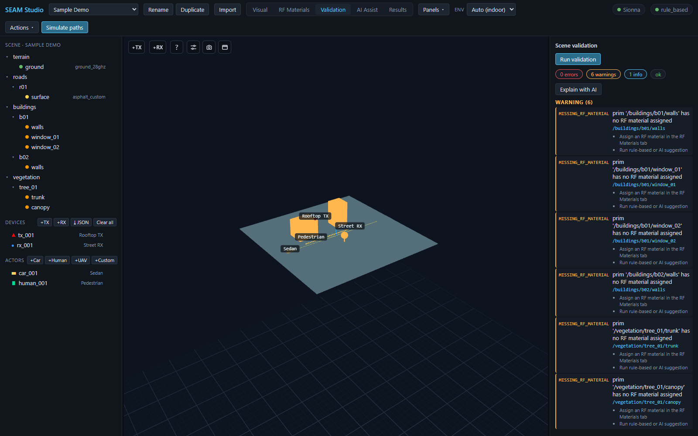
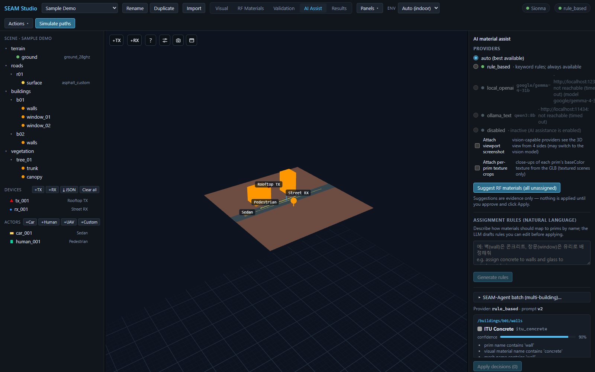

RF materials: library, validation, and AI-assisted assignment
A textured scene that looks finished is not RF-ready. This guide walks through the three modes that turn visual geometry into a simulatable digital twin: the RF Materials library, Validation, and AI Assist. Everything here works with the Mock backend alone — no GPU or Sionna RT installation required.
1. Why RF materials matter
The ray tracer computes every reflection, transmission, and diffraction from each surface's electromagnetic properties — relative permittivity (εr), conductivity (σ), thickness, scattering and XPD coefficients. A visual/PBR material tells you what a surface looks like; it says nothing about how a 28 GHz wave bounces off it. SEAM Studio therefore keeps the two deliberately separate: every mesh prim carries a visual material and an RF material binding, and the inspector shows them side by side.
Until a prim has an RF material, the solver cannot model it faithfully — which is why unassigned surfaces glow warning-orange in the RF overlay and produce MISSING_RF_MATERIAL warnings in validation.
For the file format and the full default library table, see ../rf_materials.md.
2. RF Materials mode — the library and assignment
Switch to the RF Materials tab. The viewport recolors every prim by its RF material's preview color, and anything unassigned glows orange. On the right, the RF material library panel lists the project's materials:

id / category / model / εr / σ), the assign buttons below it, and orange unassigned buildings in the viewer.The table columns:
- id — the material id you assign (e.g.
itu_concrete,itu_glass,asphalt_custom). - category — concrete, glass, ground, human, …
- model —
ITUorconst. ITU entries derive εr/σ from the ITU-R P.2040 parameterization at the simulation frequency, so their εr / σ column shows— / —. const entries (likeasphalt_customorground_28ghz) use the fixed εr/σ values shown, at every frequency — use them for measured or literature values, and mind their valid band.
Assign a material to a selection
- Select surfaces in the scene tree or viewport — Ctrl-click adds to the selection. The panel's counter chip shows
N selected. - Click a material row in the table to make it active.
- Press Assign to selection (N).
The overlay recolors immediately and the binding is saved to the project as user_confirmed. If some selected prims already carry a different user-confirmed material, the button turns into a two-step confirm (N assigned — overwrite?) so one click cannot silently discard a manual decision. Unassign selection (N) clears the binding, with the same two-step guard for confirmed assignments.
Custom materials
Press New custom material, type a name (the id is auto-slugged from it, e.g. "My Facade Glass" → my_facade_glass), and press Create. If a library row was active, the new material is cloned from it. Clicking any row opens the editor below the table, with fields for Display name, Relative permittivity εr, Conductivity σ (S/m), Thickness (m), Scattering coeff (0–1), XPD coeff (0–1), and Preview color — save with Save material. Leaving εr/σ empty makes the material fall back to the ITU frequency-dependent model at simulation time. Custom materials can be removed with Delete material (two clicks — the first arms the confirm); builtin materials cannot be deleted.
Move libraries between projects
- Export library downloads the whole library as a portable JSON file — useful when you have calibrated materials you want to reuse.
- Import library merges a library JSON into the current project. Colliding ids are renamed by the server, never overwritten.
3. Validation mode — find what's missing
Switch to the Validation tab and press Run validation. The Scene validation panel summarizes the report as severity chips — errors, warnings, info — plus an overall ok / blocked chip:

MISSING_RF_MATERIAL warnings, each naming the prim and listing concrete next steps.Each issue row shows the machine-readable code, a message, and the affected prim id — click a row to select that prim in the scene, so you can fix issues one by one. MISSING_RF_MATERIAL warnings carry per-prim remediation hints such as "Assign an RF material in the RF Materials tab" and "Run rule-based or AI suggestion". Other checks cover unknown material ids, visual/RF mismatches, missing thickness, invalid mesh references, and more.
If the report is hard to read, press Explain with AI: it re-runs validation and explains every issue in plain language with suggested actions. It is strictly read-only — it never changes the scene — and it needs a local LLM provider (e.g. Ollama); without one you get a clear message instead.
4. AI Assist mode — evidence-based suggestions
Switch to the AI Assist tab. The AI material assist panel starts with the Providers list:

rule_based reachable here), the natural-language rules box, and a suggestion card recommending ITU Concrete at 90% confidence with evidence bullets.- auto (best available) — picks the best reachable provider.
- rule_based — deterministic keyword rules over prim names, visual material names, and tags. Always available, no server needed — so the whole flow works offline and with the Mock backend.
- local_openai — a local OpenAI-compatible server (e.g. LM Studio).
- ollama_text — a local Ollama server.
- disabled — AI turned off.
Each row has a reachability dot; unreachable providers are grayed out with a detail message (the toolbar also shows the active provider name, or AI off). For local_openai/ollama_text a Model picker appears so you can pin a specific model.
Two checkboxes feed extra visual evidence to vision-capable models:
- Attach viewport screenshot — the provider sees the 3D view from 4 sides (Ollama may switch to its vision model).
- Attach per-prim texture crops — close-ups of each prim's baseColor texture from the GLB (textured scenes only).
Suggest, review, apply
Press Suggest RF materials (all unassigned) (with a selection active it becomes (N selected)). Each suggestion arrives as a card: the prim id, the recommended material (e.g. ITU Concrete), a confidence bar, evidence bullets ("prim name contains 'wall'", "visual material name contains 'concrete'"), and alternative chips. On each card choose Approve, Reject, or pick another material via Edit: pick other… — then press Apply decisions (N). Suggestions are evidence only; nothing touches the scene until you apply, and ↩ Revert restores the previous bindings after an apply. Cards also carry an RF disambiguate fold-out that ranks candidate materials against measured path gains — see ../ai_assistant.md for the full contract.
Natural-language assignment rules
In Assignment rules (natural language), describe the mapping in one sentence (e.g. "assign concrete to walls and glass to windows/glazing") and press Generate rules. The LLM drafts editable rules — comma-separated name-match terms → material — which you can tweak or delete before pressing Apply rules (N). Applying only suggests: the matched prims populate the same review cards above, and nothing is committed until Apply decisions.
SEAM-Agent batch for large textured scenes
For big photogrammetry scenes with many textured buildings, open SEAM-Agent batch (multi-building)…. Check the buildings to process, add an optional Hint (a shared site hint such as "Hanyang University Seoul campus"), optionally enable Allow web evidence, and press Run N building(s) sequentially. The agent captures, analyzes, and proposes per-facade materials one building at a time; finished items show needs review, and the Review button opens that building's proposals on its prim card. A running batch can be halted with ■ Stop batch.
Related docs
- ../rf_materials.md — library file format, ITU vs constant models, the default library, per-prim overrides.
- ../ai_assistant.md — provider chain, configuration variables, the strict JSON contract, provenance logging.
- ../accuracy.md — why materials dominate RT accuracy and how measurement calibration reduces the residual.
- ../../TUTORIAL.md — the 15-minute first-session tour, including a hands-on assignment walkthrough.